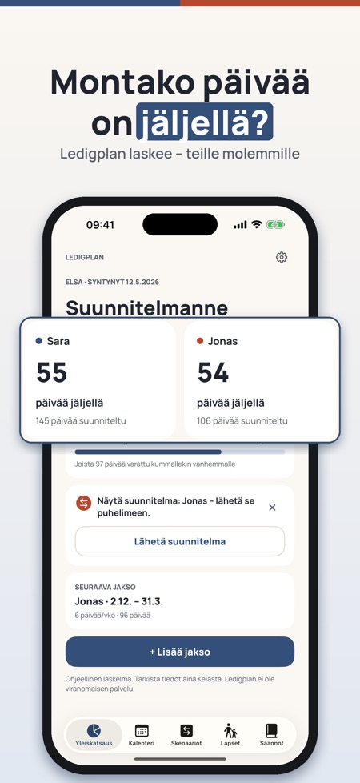
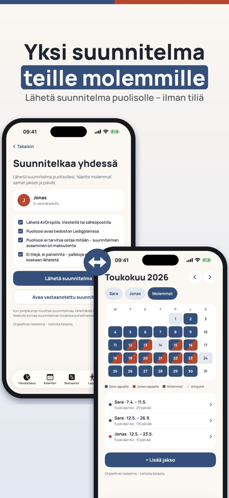
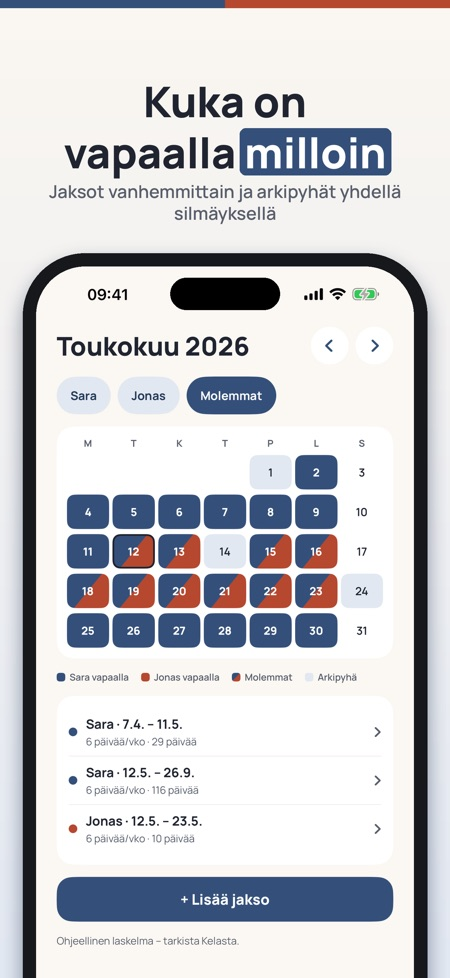

Laske päivät ja suunnittele. Suunnittele vuosi 2027 nyt: merkitse vapaat ennen joulua ja näe jäljellä olevat päivät – teille molemmille.



Montako vanhempainvapaapäivää teillä on jäljellä – ja kuka pitää mitkäkin? Ledigplan laskee päivät teille molemmille, näyttää ne yhteisessä kalenterissa ja antaa verrata suunnitelmia ennen päätöstä. Ei kirjautumista, ei tiliä.
Viranomaisen työkalu suunnittelee yhden vanhemman kerrallaan. Ledigplan on yksi suunnitelma teille molemmille.
Yleiskatsaus, kalenteri ja säännöt yhdelle lapselle ja yhdelle suunnitelmalle ovat käytettävissä ilman ostoa. Ledigplan Plus on kertaosto, joka avaa puolison kanssa jakamisen, skenaariot, viennin ja useamman lapsen. Ei tilausta.
Laskelma on ohjeellinen. Ledigplan on itsenäinen eikä liity Kelaan, Försäkringskassaniin, NAV:iin tai Udbetaling Danmarkiin. Hakemuksen teet aina viranomaiselle.